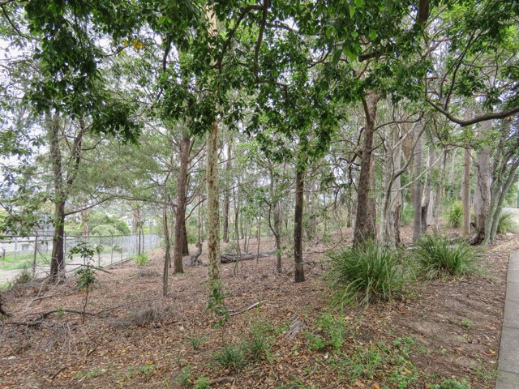

Kelvin Grove Reserve

This is a small piece of bushland in Kelvin Grove that separates the local state school from the busy Kelvin Grove Road
List of reviews and ratings by users
3 Stars
During the day it is a nice shortcut for people walking from Kelvin Grove down towards the local KFC or ALDI supermarket. It is quite poorly lit at night though.